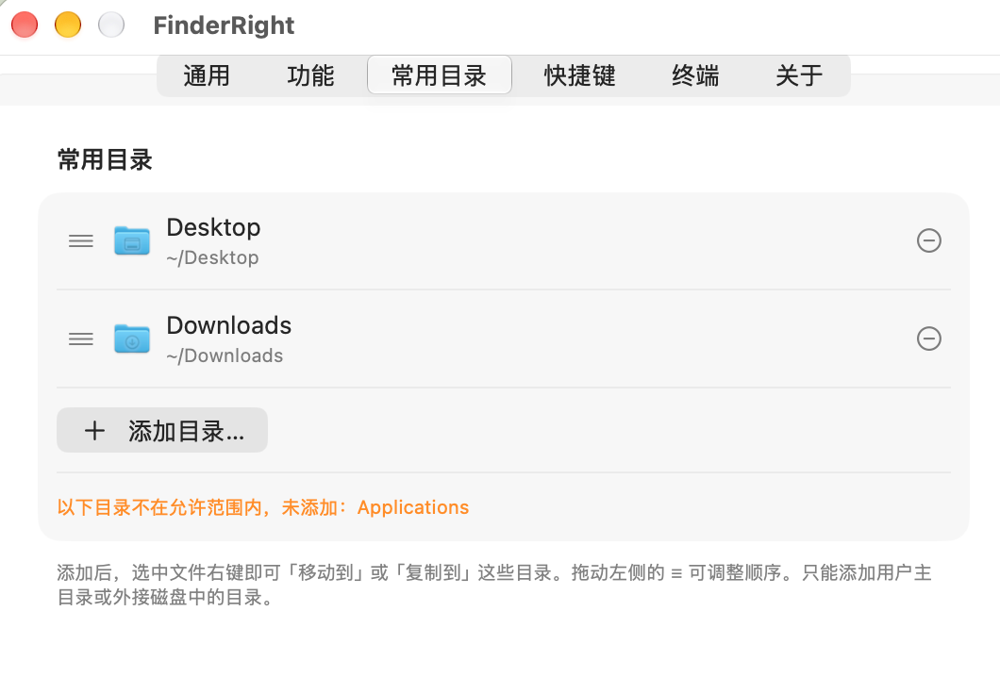

灵感来了，直接新建
文本、Markdown、代码，或空白 Office 文档。在当前文件夹直接创建，也支持自己的文本模板。
FOR macOS · 免费开源
右键新建文件、打开终端、剪切粘贴。免费开源，文件操作在本地完成。
macOS 13+ · Apple Silicon · MIT
 ⌃ click
⌃ click
每天重复的小事，值得一个更简单的做法。
文本、Markdown、代码，或空白 Office 文档。在当前文件夹直接创建，也支持自己的文本模板。
在当前目录打开终端或编辑器。复制完整路径、文件名，或适合终端的转义路径。
剪切粘贴、移动到常用目录、压缩为 ZIP。把文件整理时常用的动作，放在同一个菜单里。
剪切后，文件带上剪刀角标。粘贴时才真正移动，待办一眼可见。

添加常用目录，右键就能移动或复制。下载、归档、项目文件，各就各位。
适用于 macOS 13 及以上、Apple Silicon。目前暂不支持 Intel Mac。
当前版本使用自签名证书，尚未经过 Apple 公证。若系统拦截，请确认安装包来自官方发布，再执行右侧命令。
按应用引导启用 Finder 扩展。在受保护目录使用功能需完全磁盘访问；无闪烁切换隐藏文件需辅助功能权限。
是的。FinderRight 免费使用，并采用 MIT 协议开源。你可以使用、查看源码，也可以自行构建。
当前版本支持搭载 Apple Silicon（M 系列芯片）、运行 macOS 13 及以上系统的 Mac，暂不支持 Intel 架构。
当前版本使用自签名证书，尚未经过 Apple 公证。请从官方 GitHub Release 下载，并按上方安装指南允许首次打开。
iCloud Drive、Google Drive 等 File Provider 云盘目录限制第三方 Finder 扩展菜单。FinderRight 在这些目录通过「服务」子菜单提供操作；完全磁盘访问不能解除这一限制。
Finder 会缓存扩展进程。更新后需要重启访达，才能加载新扩展。可在终端执行「killall Finder」，访达窗口会关闭并重新打开。
点击 FinderRight 菜单栏图标，在「最近操作」里查看。失败项会显示原因，成功项可在访达中定位结果；保留菜单栏图标才能看到这些提示。
如果 FinderRight 让你的日常操作更顺手，欢迎点个 Star 支持，也欢迎反馈使用问题。
macOS 13+ · Apple Silicon